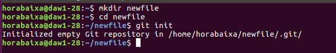
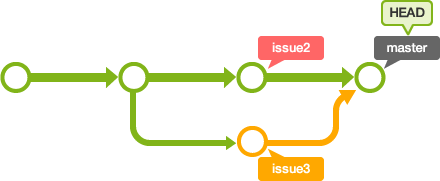
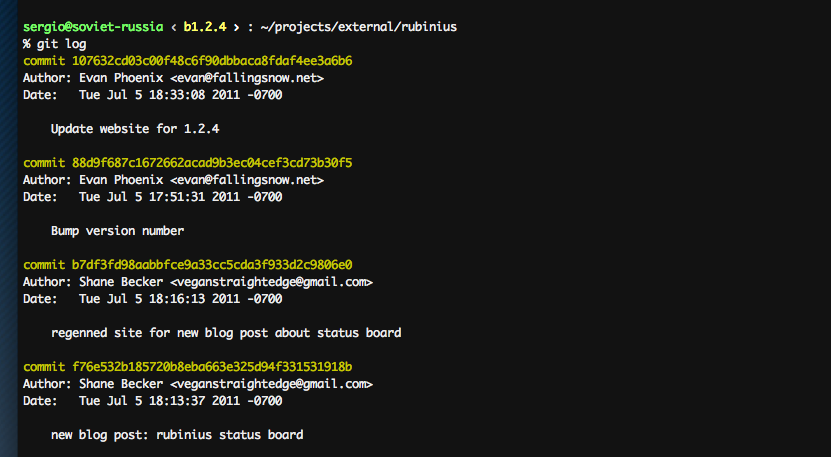

Un sistema de control de versiones (CVS) te permite realizar un seguimiento de la historia de una colección de archivos
y además incluye la funcionalidad de revertir a una versión anterior.a colección de archivos usualmente es
código fuente de algún lenguaje de programación, sin embargo, un sistema de
control de versiones funciona con cualquier tipo de archivo
Un sistema de control de versiones distribuida tiene un servidor central para guardar el repositorio y cada ususario puede hacer
una copia completa del repositorio central y por ser una copia completa tiene las misma funcionalidades que el repositoriuo original
Es un sistema de control de versiones distribuida que tiene su origen a partir del del desarrollo de kernel de Linux.
Es muy utilizado por proyectos comerciales de verciones como Android o Eclipse.
Git modela sus datos más como un conjunto de instantáneas de un mini sistema de archivos Cada vez que confirmas un cambio, o guardas el
estado de tu proyecto en Git
Luego de clonar o crear un repositorio el usuario tiene una copia completa del
repositorio, y puede realizar operaciones de control de versiones contra este
repositorio local, como por ejemplo crear nuevas versiones, revertir cambios, etc.
El flujo de trabajo básico en Git es algo así
- Repositorio: Un repositorio contiene la historia, las diferentes versiones en
el tiempo y todas las diferentes ramas. En Git cada copia del repositorio
es un repositorio completo. Si el repositorio en el que estás trabajando no
es creado con la opción “bare”, entonces permite hacer un checkout de las
revisiones que desees en tu repositorio local.
- Working tree: Posee el contenido de un commit que se puede obtener
haciendo un checkout desde un repositorio git. Luego uno puede modificar
ese contenido y hacer un nuevo commit con los cambios al repositorio
- Branch (rama): Un branch es un puntero con un nombre determinado por
el usuario que apunta a un commit. Posicionarse en un branch utilizando
git es denominado como “hacer un checkout” de ese branch. Si estás
trabajando en un determinado branch, la creación de un nuevo commit
hace avanzar el puntero a esta nueva instancia. Cada commit conoce
sus antecesores así como a sus sucesores en caso de tenerlos. Uno de los
branches es el default, generalmente llamado master
- Tag: Un tag apunta a un commit que unívocamente identifica una versión
del repositorio. Con un tag, podés tener un puntero con nombre al que
siempre puedas revertir los cambios. Por ejemplo, la versión de 25.01.2009
del branch “testing”
- Commit: Vos commiteas los cambios a un repositorio. Esto crea un nuevo
objeto commit en el repositorio que unívocamente identifica una nueva
versión del contenido del repositorio. Esta revisión puede ser consultada
posteriormente, por ejemplo si uno quiere ver el código fuente de una
versión anterior. Cada commit posee metadata que nos informa acerca
del autor, la fecha y otros datos que nos pueden resultar prácticos a la
hora de tratar de encontrar uno determinado.
- • URL: Una URL en Git determina la ubicación de un repositorio. Revisión:
Representa una versión del código fuente. Git implementa las revisiones
de la misma manera que los objetos commit.
- HEAD: Es un objeto simbólico que apunta generalmente al branch sobre
el que estamos trabajando (lo que también conocemos como “checked
out branch”). Si uno cambia de un branch al otro el HEAD apunta al
último commit del branch seleccionado. Si uno hace un checkout de un
determinado commit, el HEAD apunta a ese commit.
- Staging area: Es el lugar en el que se almacenan los cambios del working
tree previos al commit. Es decir, contiene el set de cambios relevantes
para el próximo commit.
- Index: Es un término alternativo para referirnos al staging area
Comandos básicos en Git
crea un repositorio nuevo
Crea un directorio nuevo, ábrelo y ejecuta
git init
para crear un nuevo repositorio de git.

hacer checkout a un repositorio
Crea una copia local del repositorio ejecutando
git clone /path/to/repository
Si utilizas un servidor remoto, ejecuta
git clone username@host:/path/to/repository

Añadiendo nuevos ficheros
Así que tenemos un repositorio, pero no hay nada en ella. Puede agregar archivos con el comando add.
git add filename

Cometer un Versión
Ahora que hemos añadido estos archivos, queremos que se pueden almacenar en realidad en el repositorio Git. Hacemos esto de enviarlos al repositorio.
git commit -m "Adding files"

Estado del git
Muestra el estado del árbol de trabajo git status
envío de cambios
Resulta útil pensar en los branches como contextos, ya que es la forma en que
se usan más a menudo. Cuando realizas cambios de ramas, se cambian los
contextos en que se están trabajando y podés rápidamente cambiar de contexto
entre las diferentes ramas.
Deshace cambios y commits
git reset HEAD deshacer el último commit y sacar del staging area
los archivos modificados
Remueve archivos del staging area
git rmSaca la entrada del archivo en el index, de manera que no va a ser tenido
más en cuenta para el próximo commit.
Creando y administrando ramas
git branch
git branchListará las ramas locales que tengas.
git branch (name_newBranch)
>git branch (name_newBranch)Crear una nueva rama y cambiar a ella
git branch -d (name_delBranch)
git branch -d (name_delBranch)Eliminará la rama
git checkout -b (name_newBranch)
git checkout -b (name_newBranch)Crear y cambiar inmediatamente a la nueva rama
git merge
git merge (branch)Combinar la rama especificada en la rama actual.

git log
git log --oneline Muestra la historia del desarrollo de este proyecto

git log --oneline --graph
git log --oneline --graphPodemos ver más claramente cuando las ramas se separaron y luego
cuando se fusionaron de nuevo.

git tag
git -a v1.0 El comando tag, básicamente, consiste en poner un marcador permanente en un commit en concreto
para que pueda ser usado para comparar con otro commit en el futuro.
Intercambio y actualización de Proyectos
git pull
git pull (github) busca en un repositorio remoto y trata de combinar en la
rama actual lo que trajo del remoto.
git fetch
git fetch (github) se usa para sincronizar el repositorio local con otro remoto, bajando los datos
no tenes a nivel local
git push
git push (github) Actualiza las refs remotas usando refs locales, mientras envía objetos necesarios para completar las refs dadas